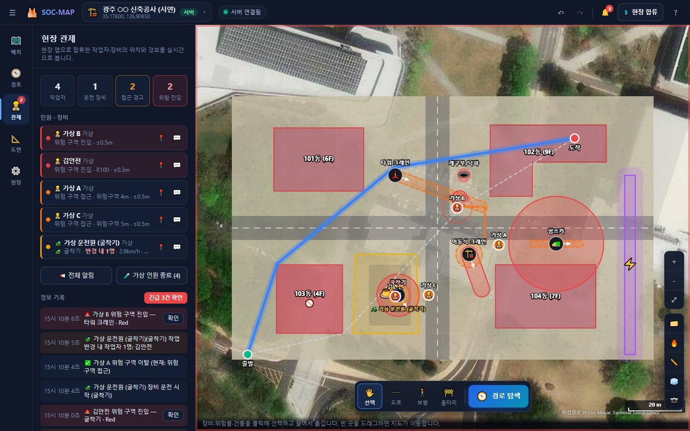
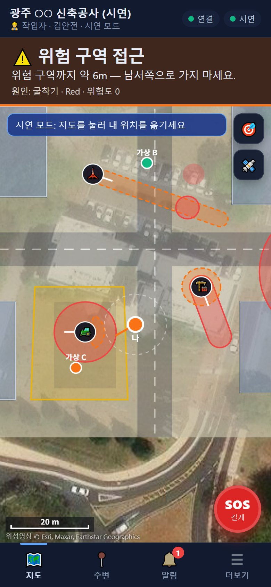

캡스톤 디자인건설 안전웹 · 모바일
SOC-MAP
GPS 기반 공사 현장 위험 관제 시스템
공사 현장을 실제 GPS 위치에 등록하고 KOSHA 기준 장비 위험 반경을 m 단위로 계산합니다. 작업자와 장비 운전원의 휴대폰이 서로의 위치를 1초마다 공유해, 위험 구역에 다가가면 본인에게, 들어가면 관리자에게 경보를 보냅니다.
- 장비 위험도 엔진 — 굴착기·크레인 등 5종, 풍속·고압선 이격 등 법정 기준 반영
- 실제 거리 계산 — WGS84 국소 좌표계, 2.8 km에서 오차 0.1 mm 이하
- 3방향 경보 — 작업자 ↔ 장비 운전원 ↔ 관리자, SOS와 경보 기록
- AI 도면 인식 · 안전 경로 — YOLOv8 건물 인식, 위험 회피 A* 경로